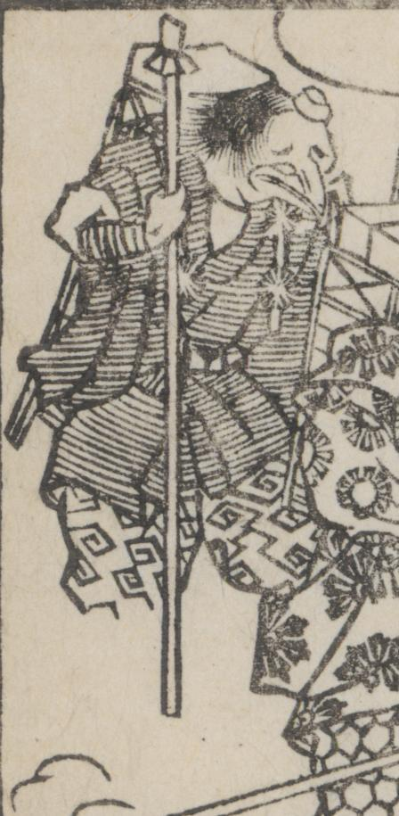

← 图鉴索引

笈を背負い金剛杖をついた行者姿の烏天狗が雲に乗っている。
著作者：一勇斎國芳／出典：親書誌：U426_nichibunken_0430：応現於竹ものかたり／日付：2016／資源識別子：U426_nichibunken_0430_0001_0000
Copyright (c)2010- International Research Center for Japanese Studies, Kyoto, Japan. All rights reserved.